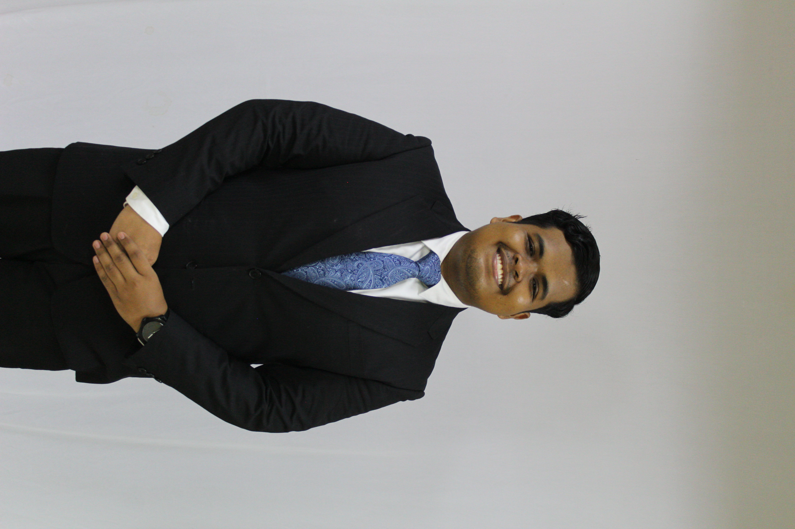
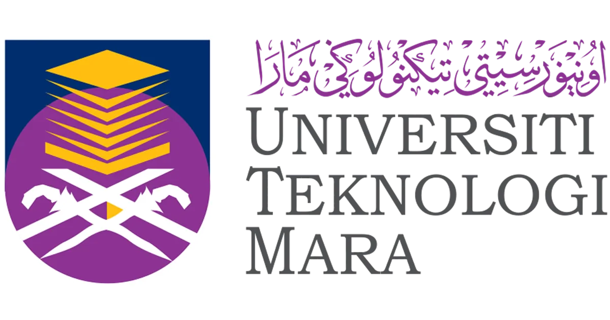
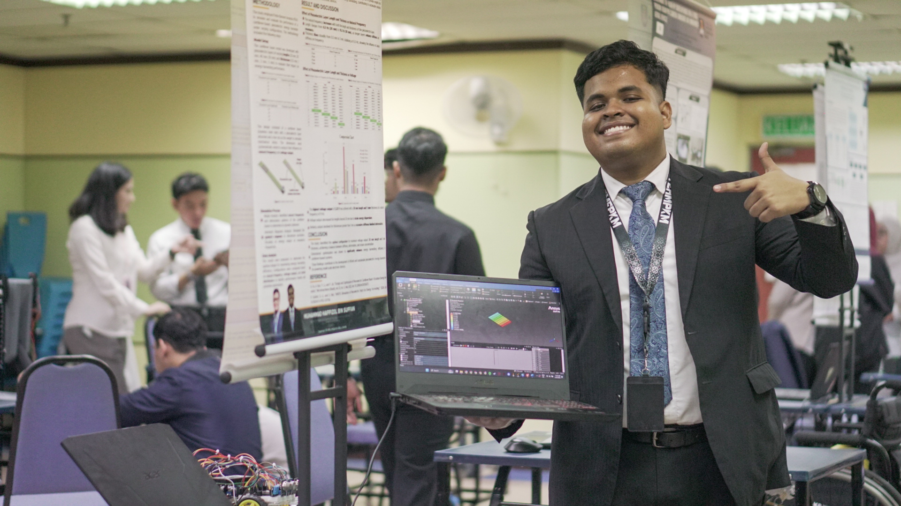
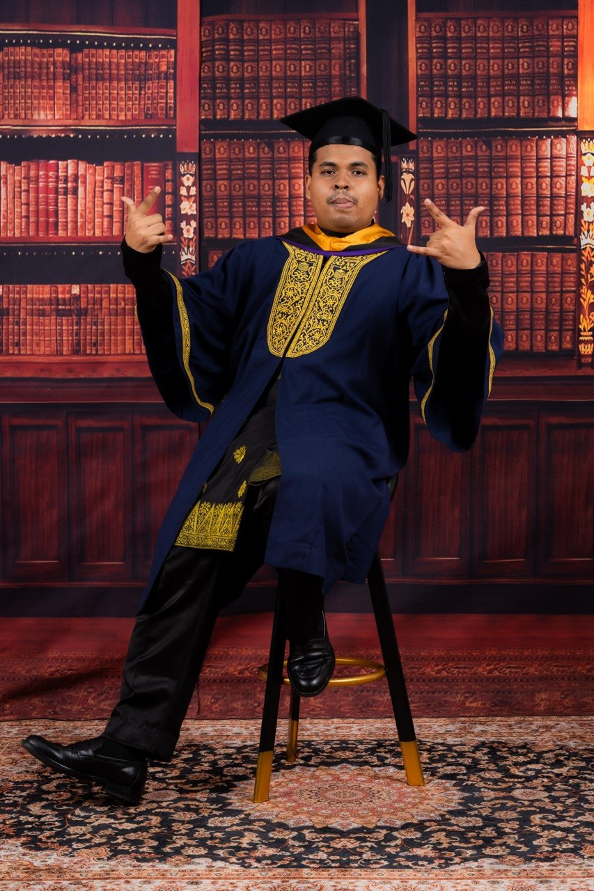

Executive, Digital Transformation Unit
Sugihara Grand Industries Sdn. Bhd.
Lead digital initiatives across two plants, report to the Factory General Manager, and supervise one permanent staff member and five engineering interns.
MECHATRONICS · DIGITAL TRANSFORMATION
Executive, Digital Transformation Unit at Sugihara Grand Industries. I develop manufacturing software, industrial IoT systems and AI automation across Port Klang and Sendayan.
View resume ↗PDFDownload Word version ↓DOCX
MUHAMMAD HAFFIZOLDigital transformation initiativesLed or advised at Sugihara
Manufacturing plantsPort Klang & Sendayan
Selected projects14 Sugihara · 2 UiTM
01 / ENGINEERING PROJECTS
Select a project to review its purpose, my contribution, technology and results.
WORKPLACE PROJECTS
14 selected systems from a programme of 38 initiatives. Roles include independent development, project leadership and intern supervision.
ACADEMIC PROJECTS

Robotics and mechanical engineering research completed during my studies. These are separate from my Sugihara initiatives.
No projects match these filters. Try another search or reset.
02 / PROFESSIONAL BACKGROUND
Mechatronics training, applied research and manufacturing systems development.
Sugihara Grand Industries Sdn. Bhd.
Lead digital initiatives across two plants, report to the Factory General Manager, and supervise one permanent staff member and five engineering interns.
Sanyco Grand Industries Sdn. Bhd. · SIMS Group
Advise on practical IoT, software and automation opportunities for a sibling manufacturing company.
Sugihara Grand Industries Sdn. Bhd.
Developed real-time machine monitoring and IoT weighing systems, including integration, validation, deployment and user support.

Engineering research presentation

UiTM graduation
TECHNICAL SKILLS
OEE · 4M Henkaten · CMMS · Preventive maintenance · Kaizen · User-centred workflows
Turning operational needs into practical systems.Raspberry Pi · Industrial sensors · UHF RFID · MQTT · Node-RED · InfluxDB · Grafana · ROS · LiDAR · SLAM · Odometry
Machine signals, material data and live visibility.Python · JavaScript · TypeScript · React · Node.js · Express/Fastify · REST APIs · SQL · PostgreSQL · SQLite
From interfaces and APIs to operational records.Langflow · n8n · Ollama · Local LLMs · Document extraction · Face-recognition integration · OpenCV · YOLO
Practical AI workflows and vision integration.Docker Compose · Linux · Git/GitHub · Socket.IO · PDF/Excel automation · Power BI · Looker Studio · Google Sheets
Deploying, supporting and communicating the work.SolidWorks · MATLAB · ANSYS FEA · Modal & harmonic response · OpenPLC · Siemens LOGO! · WinSPS-S7 · Arduino IDE · Basic KiCad PCB design
Mechatronics foundations alongside digital delivery.03 / DEVELOPMENT DIRECTION
FUTURE WORKConnect existing manufacturing systems into a shared operational ecosystem and work toward a digital twin of factory operations.
The digital twin is a future development goal.
CONTACT
For engineering and digital transformation opportunities:
haffizol.suf@gmail.comShah Alam, Selangor, Malaysia